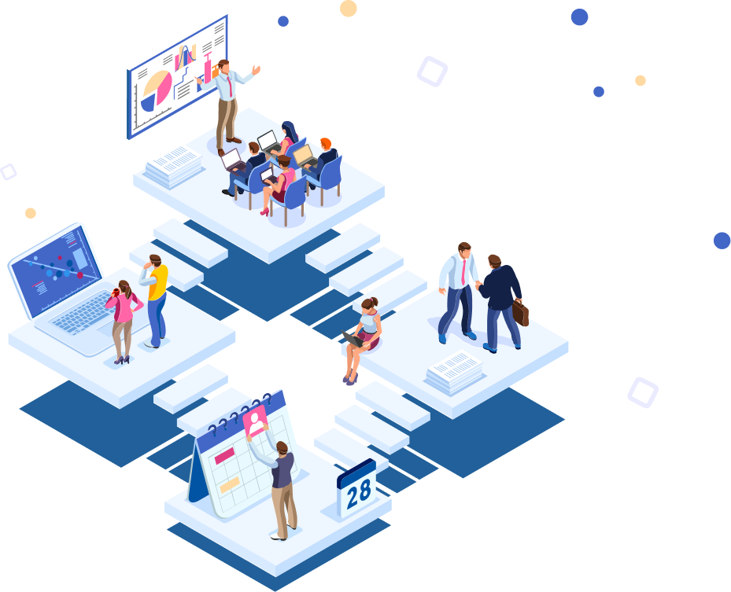

Профессиональный ИТ-аутсорсинг в Челябинске
Берем на себя ответственность за состояние и работоспособность сети, серверов, компьютеров и офисной техники
Расчет стоимости
Выполняем техническое обслуживание компаний — от установки компьютеров до закупки оборудования и прокладки сети. Вместо 1 системного администратора в штате — коллектив из 5 программистов, 3 техников и 4 менеджеров-консультантов. Команда справляется с поставленной задачей в 3 раза быстрее, чем администратор, работающий в одиночку.
Аутсорсинг компьютеров: установка оборудования, настройка программ, интернета, wi-fi, подключение принтеров, диагностика работоспособности...
Администрирование серверов и серверных приложений, оптимизация работы оборудования, наблюдение за функционированием сетевых устройств
Экспертная оценка ИТ-инфраструктуры компании для выявления проблем в работе и роста эффективности использования ИТ-систем

Настройка подключения и управления несколькими компьютерами с 1 ПК
Администрирование серверов и серверных приложений, оптимизация работы оборудования, наблюдение за функционированием сетевых устройств
Экспертная оценка ИТ-инфраструктуры компании для выявления проблем в работе и роста эффективности использования ИТ-систем
Подбор, установка и настройка антивирусной программы, обучение сотрудников навыкам безопасной работы в интернете
Проектирование, монтаж и контроль систем видеонаблюдения. Настройка единой сети телефонии, распределения и учета звонков